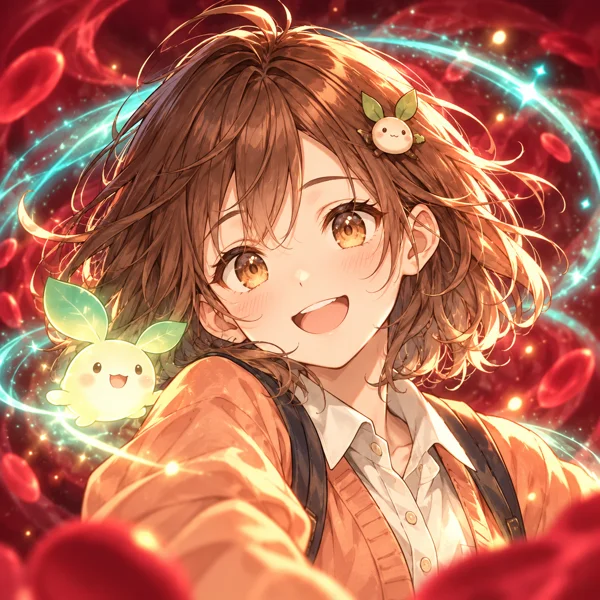
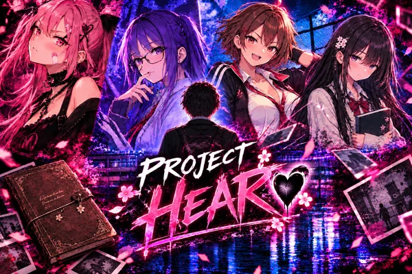
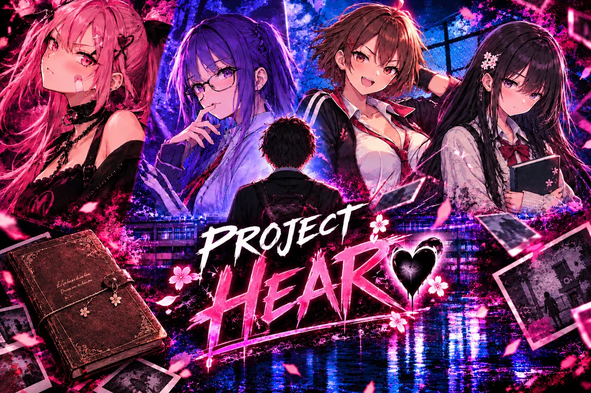
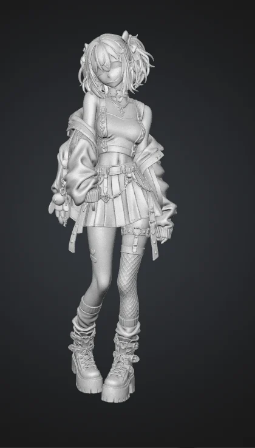

Prototype en test
PROJECT MIRAI
Première injection.
Une gardienne. Un corps devenu champ de bataille. Un espoir à protéger.
Studio indépendant de jeux vidéo
Des mondes étranges.
Des histoires humaines.
Des jeux anime, des émotions et quelques idées qui refusent de rester sages.

Le prototype arcade MIRAI Android · Gardiennes · Phonk
Le visual novel PROJECT HEARTChoisis une porte. Garde ta curiosité.
Nos projets 🎮
W1Wave 1 · Première salve2026–2027
Quatre univers pour la première salve de jeux du studio.
Première injection.
Une gardienne. Un corps devenu champ de bataille. Un espoir à protéger.

Love is complicated!
Quatre filles. Un garçon. Beaucoup trop de problèmes de cœur.
Somewhere, there is an exit.
Un complexe gigantesque. Des milliers de cubes. Une seule obsession : trouver la sortie.
Take care of me, okay?
Votre meilleur ami compte sur vous. Peut-être un peu trop.
Bande originale 🎵
Plongez dans l'ambiance sonore du jeu avec la playlist officielle.
Playlist officielle · Project HEART
Notre philosophie 🌈
Une idée peut devenir une romance, un labyrinthe ou une pluie de projectiles. On lui laisse choisir sa forme.
Essayer les idées un peu trop bizarres.
Un monde, son caractère, ses couleurs.
Rire. Douter. S’attacher un peu trop.
Laisser une porte entrouverte. À toi de pousser.
Notre règle ? Ne jamais manquer de curiosité.
Le dev sous le masque
Le développeur derrière Youthseiko prend la parole. Yuki se réserve le droit de commenter.
Masque d’oni. Veste Adidas.
Café, Monster et mondes à inventer.
« Le masque cache les cernes, pas les ambitions. Bienvenue dans mon coin du studio : les projets qui avancent, les idées qui débordent et Yuki qui tient les comptes. »
Notes de développement / 01—03
Des réflexions, des hésitations.
Yuki écrit dans la marge.
« Le plus difficile avec plusieurs univers en tête ? Accepter qu’une idée attende son tour. Je garde ce carnet pour les petits progrès et les questions encore ouvertes. »
« Une explosion peut être spectaculaire ; il faut aussi que les doigts trouvent les boutons. C’est ce qui m’occupe avec MIRAI : trouver le bon confort en portrait. Le téléphone ramène vite les grandes idées à la taille d’un pouce. »
Voir MIRAI« Avec HEART, j’ai envie qu’une réplique donne envie de lire la suivante. Combien en dire, combien laisser deviner ? C’est la question que je veux garder en tête en parlant des personnages. Yuki, elle, a déjà un avis. »
Voir HEARTQuestions au dev
Version courte. La tasse est encore chaude.
Aucune démo publique ni date de sortie annoncée. Les versions actuelles sont des prototypes de travail. Les annonces confirmées seront dans les actualités.
« Elle accueille les visiteurs, protège son carnet à croix et commente mon travail. Son porte-clés chauve-souris est probablement mieux organisé que moi. »
Yuki : « Probablement ? »
Actualités 📣
Les avancées concrètes, au fil du développement.
· Yuki Kurose
Des études 3D, une version animée et une application desktop où elle se balade sur le bureau : YU donne de nouvelles formes à Yuki Kurose. Toujours plus vivante, toujours plus de désirs… et de moins en moins décidée à rester dans son coin de l’écran.

Aperçus du travail en cours de YU · 27–28 octobre 2026.
· MIRAI
Le prototype de MIRAI passe aux essais sur Android. Prochaine étape : affiner les commandes tactiles et le confort en portrait.
Rencontrer MIRAIAucune actualité plus ancienne pour le moment.
Suivez Youthseiko 💌
Une question, un retour, un petit mot ? La porte du studio est ouverte.
Le café est facultatif. La curiosité, vivement conseillée.